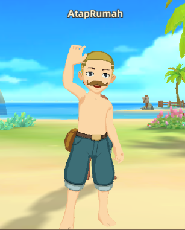

Favorite Character

A character's nick on any game that played by hendra. It was found on 2020 when he saw that kind of name appear on WWP's game. After that he took the name for himself, and named on all of the game's character he was played. As expected, the name is so unique and become trademark for the player. the reason why he keeps using that name is because it takes time for him to find a suitable name for a nickname in the game. So if you find me on any game you played, please greet me. Thanks. For more info about this character, check out his ataprumah.co.id page